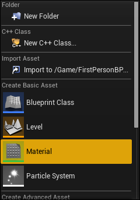

class: center, middle 独りUE4Shader研究 <img src="ue4_log.jpg" width="320px" align="center"> --- <h1> 唐突だが、Shader書きたい！ </h1> <img src="Shader.jpg" width="640px" align="center"> ### ということで、僕（オギ）は、今後UE4yochiで、UE4のshaderの研究をします。 --- # MaterialEditorYochi ## トピック 1. 参考サイトなど 1. MaterialEditorのとは? 1. MaterialEditorの画面 1. MaterialEditorでのコメントの方法 --- # 今回の参考サイト [2 - Creating a Basic Material](https://www.youtube.com/watch?v=Yb4uu2NEC0E) <img src="2-Creating a Basic Material.PNG" width="920px" align="center"> --- ## MaterialEditorって? ### "Material"って? 一言で言えば、<b>3D オブジェクトの色</b> #### 3D グラフィックスの一般的な用語としては、「材質」とか「質感」のこと --- ## MaterialEditorって? UE4では、MateriaなどSHaderをノードベースのEditorで書けるよ! ### MaterialEditorで構築した、Materialが最終的にShaderCodeに変換され ### クロスコンパイルされ、マルチプラットフォームになるみたい --- # MaterialEditorの使い方 ## Material Editorを開く  「Content Browserビュー」→「Create Base Asset」→「Material」 --- ## MaterialEditorの画面説明 1. Menu Bar - 現在のマテリアルのメニューオプションをリスト表示. 1. Toolbar - マテリアルの作業に使用するツールを収容. 1. Viewport Panel - メッシュのマテリアルをプレビューするパネル. 1. Details Panel - マテリアルのプロパティ、または選択したマテリアルか関数ノードをリスト表示. 1. Graph Panel - マテリアルのシェーダー命令を作成するマテリアル式と関数ノードを表示. 1. Palette Panel - 利用可能なマテリアル式と関数ノード全てをリスト表示. --- # MaterialEditorの要素 --- # MaterialEditorの使い方 ## マテリアル式のNetworkにComentを入れる 方法は以下の2通り. * 各ノードの Desc プロパティでテキストを追加する * コメント オブジェクトのフレーム内にノードを配置します. --- ### Desc プロパティを使用する 各Material式ノードには, [Desc]プロパティがあり, [Details (詳細)] パネルで利用できます. ### コメントを使用する グラフにマウスをかざしながら, C を押しすことでいつでもコメントを作成 または グラフのブランクエリアで右クリックし,[Add Commene (新規コメント)] を選択. → 複数ノードのグループ周辺でフレームを伸縮し, [Desc]プロパティを使用して一回に1つのノードを説明するのではなく, ネットワークのセクション全体を説明する最適な方法になります.